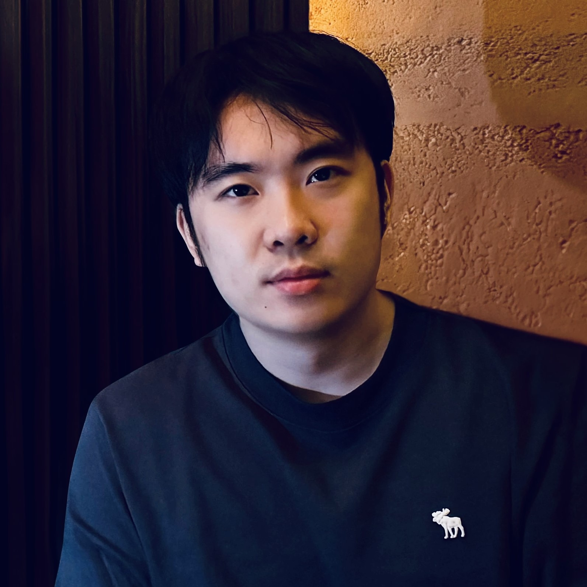
Chenyang (Danny) Ma
About Me
I am a final-year Ph.D. student in Computer Science at the University of Oxford, co-supervised by Prof. Andrew Markham and Prof. Niki Trigoni. My study is generously funded by the EPSRC DTP International Doctoral Scholarship. I had the privilege of collaborating closely with Xavier Puig and Ruta Desai at FAIR, Meta, and with Diego Romeres and Chiori Hori at Mitsubishi Robotics. I also spent wonderful times interning at IBM (2025), Roku (2024), and Flower Labs (2023).
Prior to my Ph.D., I worked as a research assistant in Cambridge Machine Learning Systems Lab, supervised by Prof. Nicholas Lane. I obtained my B.S.E. degree from University of Michigan, completing multiple projects under the guidances of Prof. Andrew Owens, Prof. Wenzhen Yuan, and Prof. Paul Green.
🎓 I expect to graduate by July 2027 and will be on the job market from early 2027. I am open to internships and full-time roles worldwide. I would appreciate it if you reached out about opportunities!
📬 I enjoy collaborating on research and projects. Feel free to reach out if you are interested in a potential collaboration!
Research Interests
My research focuses on Embodied AI, robotics, and foundation models. My Ph.D. work builds on three closely-related questions:
- How can we enhance agents’ reasoning and planning capabilities in dynamic environments, bridging the gap between visual perception, task descriptions, and low-level actions? I explore both improving the capabilities of VLMs/VLAs themselves and designing hierarchical agentic systems.
- How can agents self-correct or refactor their plans and actions, with or without human feedback?
- How can we enable agents that can collaborate with humans, accommodating individual preferences, safety needs, and spontaneous intentions?
On the side, I also enjoy working with vision applications that utilize various modalities (Vision, Tactile, 3D) and AI methods that are less centralized and more collaborative (Federated Learning).
News
- [Nov. 2025] Started my internship at Mitsubishi Electric Research Laboratories! (Mentors: Diego Romeres, Chiori Hori)
- [Sep. 2025] Our paper COOPERA was accepted to NeurIPS 2025 and selected as Spotlight!
- [Jun. 2025] Started my internship at IBM Research! (Mentor: Dave Braines)
- [Apr. 2025] Started my research consultant role at Mitsubishi Electric Research Laboratories! (Mentors: Diego Romeres, Chiori Hori)
- [Jan. 2025] Defended my Transfer of Status viva (Examiners: Prof. Alessandro Abate, Prof. Ioannis Havoutis).
- [Sep. 2024] Our paper SpatialPIN got accepted into NeurIPS 2024!
- [Jul. 2024] Started my internship at Roku Advanced Development! (Mentor: Michael Sanders)
- [Jun. 2024] Started my research collaboration with Meta FAIR! (Mentors: Xavier Puig, Ruta Desai)
- [Oct. 2023] Started my Ph.D. journey at the University of Oxford.
Selected Publications (Full list on Google Scholar)
-
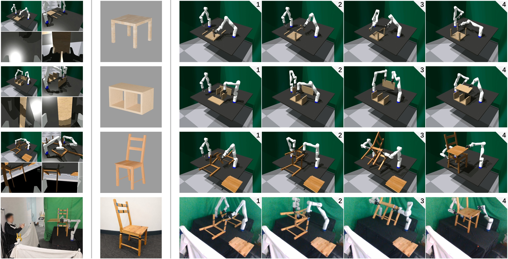
ArXivFurnitureVLA: Learning Long-Horizon Bimanual Furniture Assembly with Vision-Language-Action ModelArXiv, 2026
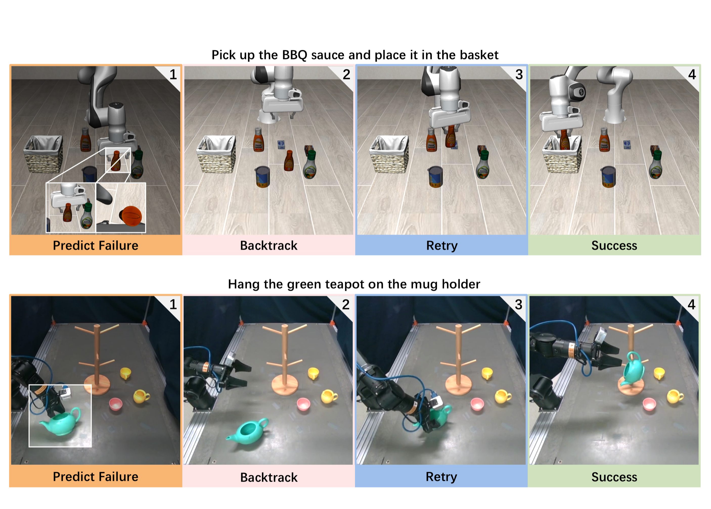
ArXivCycleVLA: Proactive Self-Correcting Vision-Language-Action Models via Subtask Backtracking and Minimum Bayes Risk DecodingArXiv, 2026
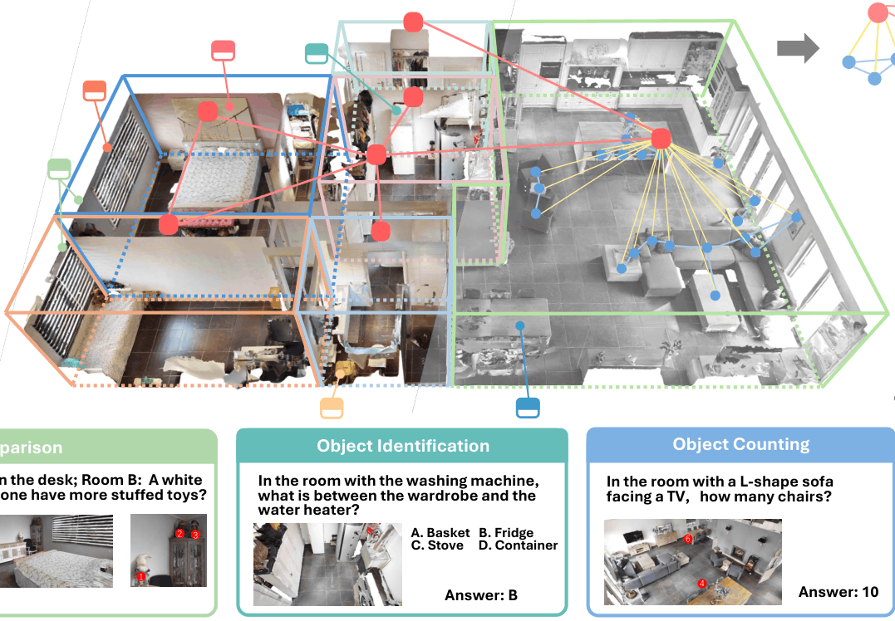
NeurIPSCAIRN: Cross-Room 3D Scene Understanding with Topology-Aware Large Multimodal ModelsNeural Information Processing Systems (NeurIPS), 2026
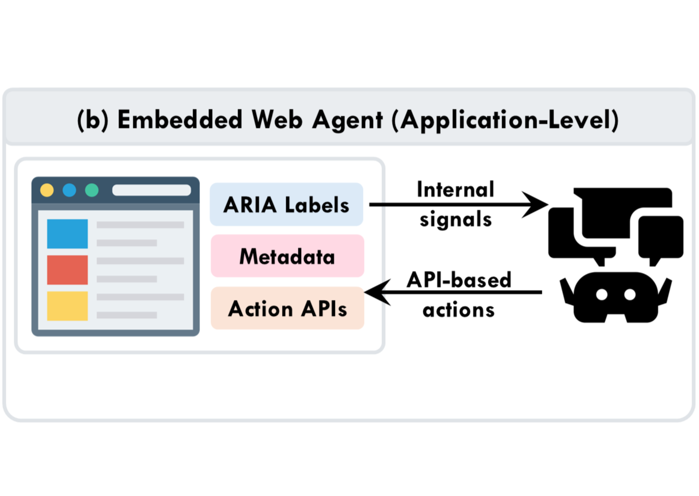
ArXivEmbeWebAgent: Embedding Web Agents into Any Customized UITechnical Report, 2026
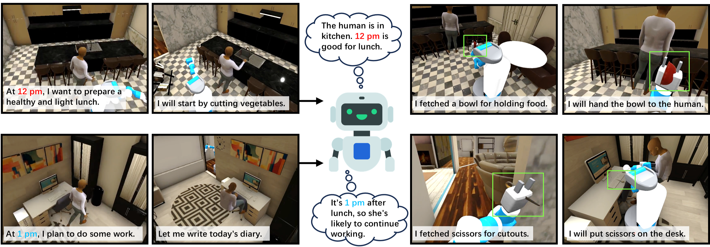
NeurIPSCOOPERA: Continual Open-Ended Human-Robot AssistanceNeural Information Processing Systems (NeurIPS), 2025 Spotlight
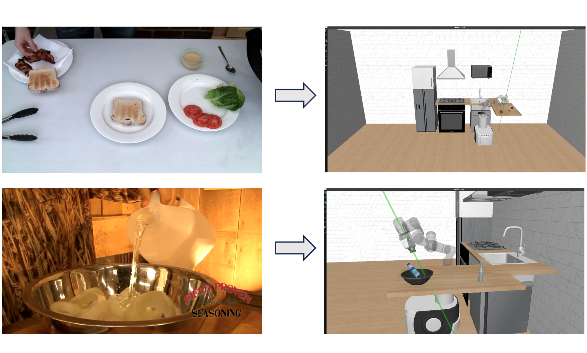
ICRAKitchenVLA: Iterative Vision-Language Corrections for Robotic Execution of Human TasksWorkshop on Safe-VLM (ICRA), 2025 Spotlight
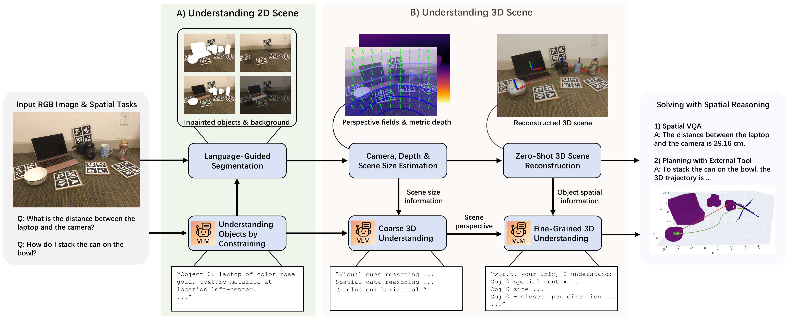
NeurIPSSpatialPIN: Enhancing Spatial Reasoning Capabilities of Vision-Language Models through Prompting and Interacting 3D PriorsNeural Information Processing Systems (NeurIPS), 2024
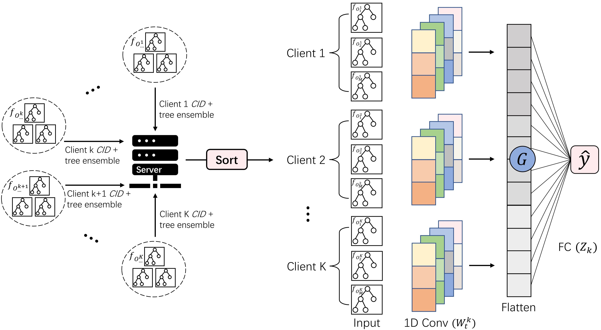
EuroMLSysGradient-less Federated Gradient Boosting Tree with Learnable Learning RatesWorkshop on Machine Learning and Systems (EuroMLSys), 2023
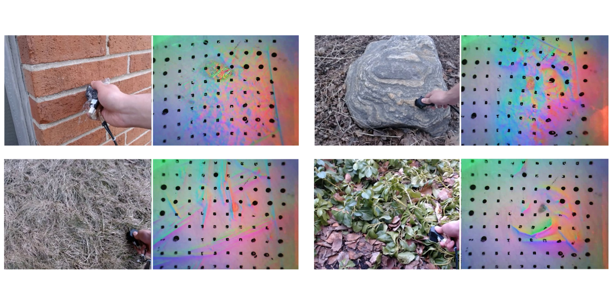
NeurIPSTouch and Go: Learning from Human-Collected Vision and TouchNeurIPS Datasets and Benchmarks Track, 2022
 CVPR
Sparse and Complete Latent Organization for Geospatial Semantic SegmentationComputer Vision and Patter Recognition (CVPR), 2022
CVPR
Sparse and Complete Latent Organization for Geospatial Semantic SegmentationComputer Vision and Patter Recognition (CVPR), 2022
Industry Experience
-
Research Scientist Intern — Nov 2025 to Apr 2026Research Consultant — Apr 2025 to Sept 2025Advised by Diego Romeres, Chiori Hori
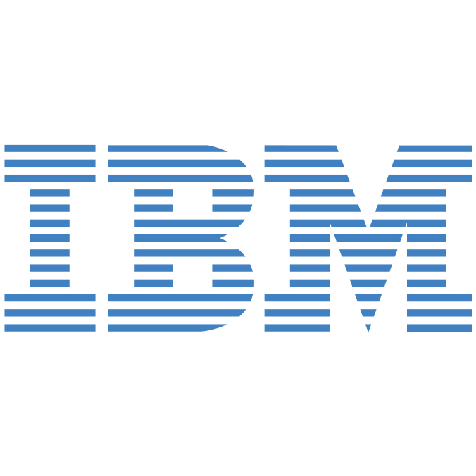
Research Scientist InternFlower Labs — Oct 2022 to July 2023Advised by Nicholas Lane, Daniel Beutel
Services
Conference/Journal Reviewer
RA-L (2026–), ECCV (2026–), ICCV (2025–), CVPR (2023–), NeurIPS (2022–)